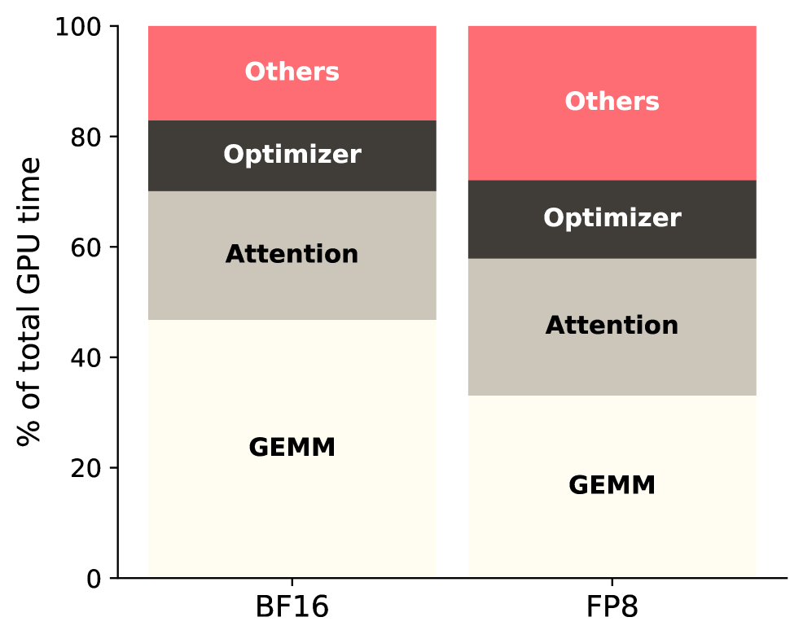
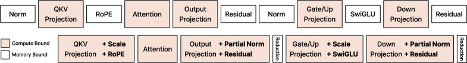
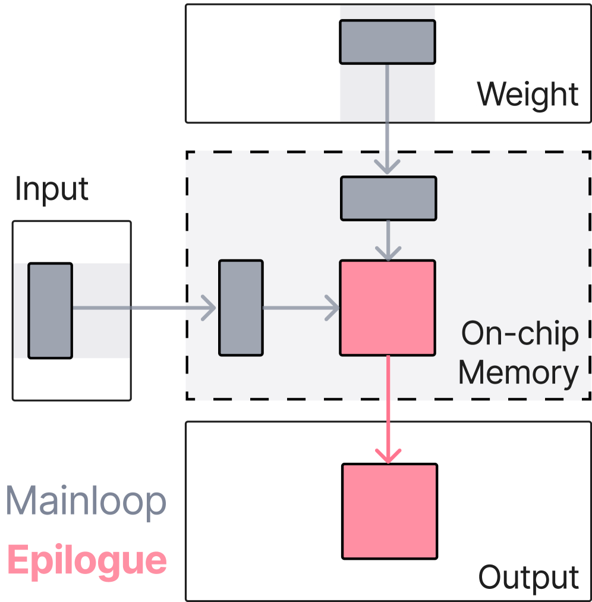
| 原语 | 做什么 | 硬件位置 | Transformer 对应 |
|---|---|---|---|
| Elementwise / Pairwise Map | 逐元素 / 成对变换 | 寄存器内 | SwiGLU, RoPE, 残差加法 |
| Vector Load / Store | 广播一维向量 | Shared Memory | RMSNorm 的 γ 权重 |
| Tile Load / Store | TMA 异步搬运二维块 | HBM ↔ SM | 残差流、保存激活值 |
| Tile Reduction | 分块内局部规约 | Warp Shuffle | RMS 平方和、Cross Entropy LSE |
| Stateful Transform | 寄存器内状态机 | 寄存器 + 状态变量 | Online Softmax 的 m, l |
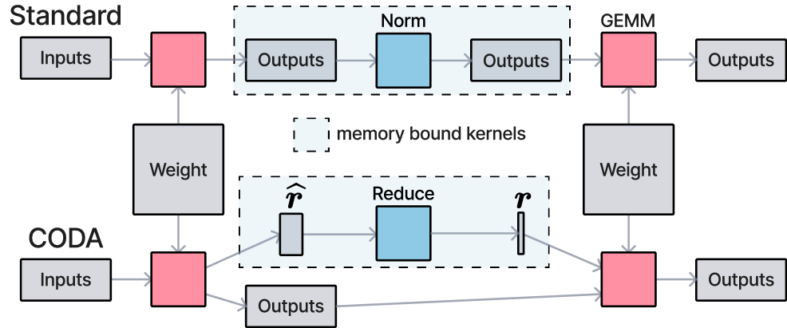
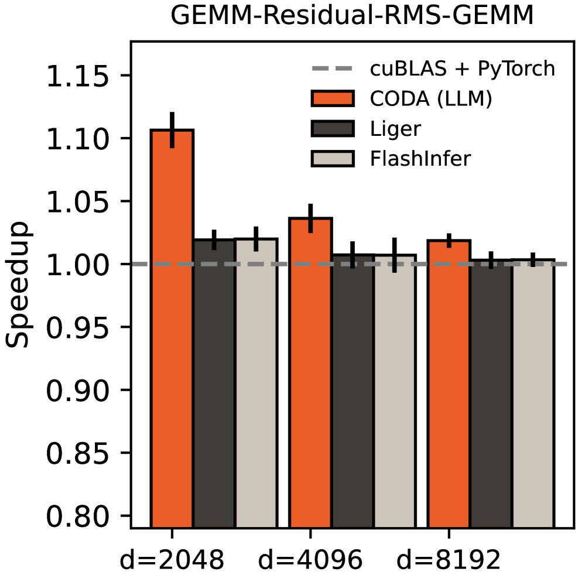
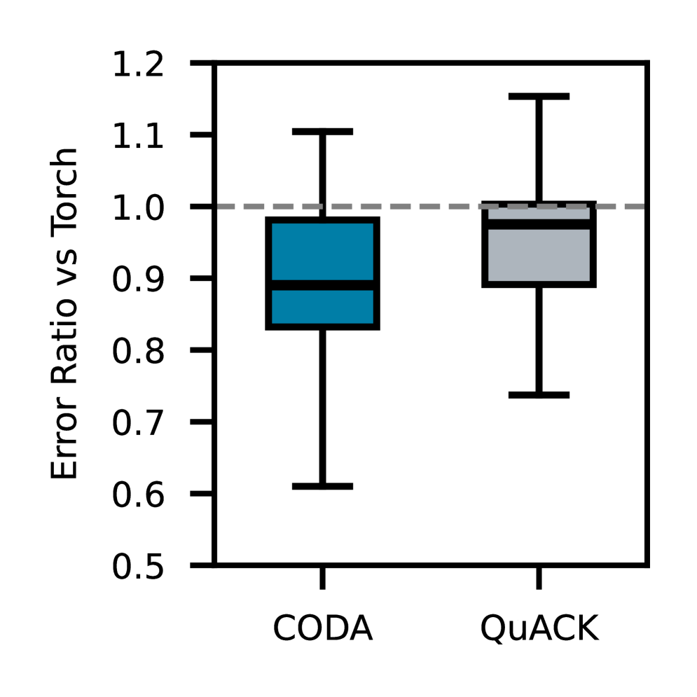
| 优化结果 | 传统 | CODA |
|---|---|---|
| GEMM 间的同步等待 | 必须等 r 算完 | 零等待，r 延迟到 GEMM2 尾部 |
| RMSNorm 开销 | 独立 kernel，读整行求平方和 | 两级规约：局部算 + 辅助合并 |
| 辅助规约输入量 | O(D)（完整张量） | O(num_tiles)（~32 个标量） |
| 优化结果 | 传统 | CODA |
|---|---|---|
| HBM 写回 | 2-3次 | 1次 |
| 中间矩阵 | 写回HBM（2×宽度） | 从未离开寄存器 |
| 配对数据获取 | 跨半个矩阵（cache miss） | 同寄存器内，零延迟 |
| Kernel数 | 2 | 1（融合） |
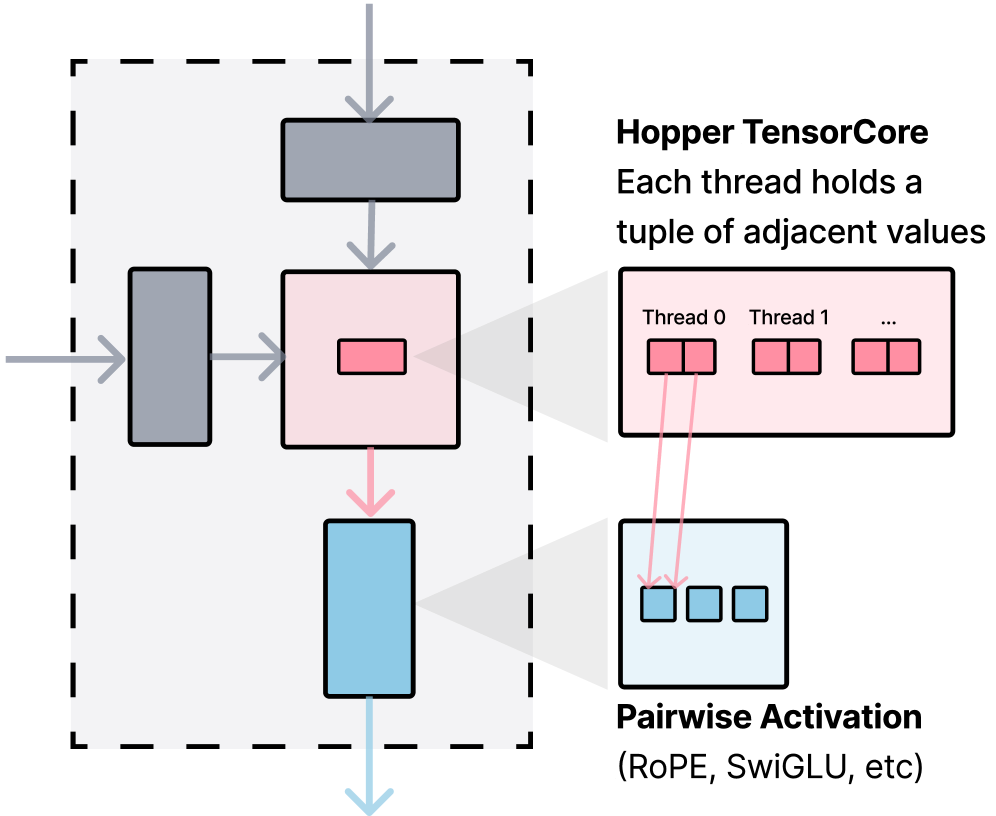
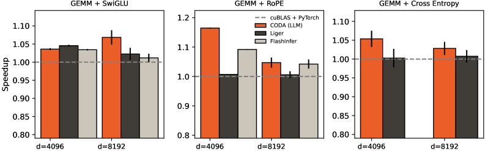
| 优化结果 | 传统 | CODA |
|---|---|---|
| HBM 写入量 | 完整 Logits（500MB-1GB） | 分块统计量（总计几 KB） |
| 显存占用 | 随词表增长极易 OOM | 近乎为零（不保存 Logits） |
| HBM 读取 | Softmax kernel 重新读完整 Logits | 辅助 kernel 只读几 KB |
| Kernel launch | 2 | 2（但第二个 kernel I/O 量差 5 个数量级） |
| Step 1 | Step 2 | Step 3 | |
|---|---|---|---|
| 前向 | GEMM(W₀) | f(h) | GEMM(W₁) |
| 反向 | GEMM(W₁ᵀ) | ⊙f'(h) | GEMM(W₀ᵀ) |
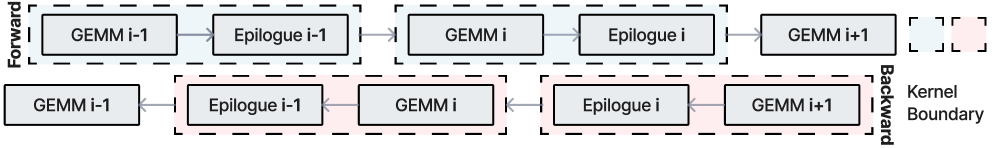
| 对比维度 | 传统手写融合 | CODA + T1 |
|---|---|---|
| 反向 kernel 架构 | 从零设计（布局/tiling/流水线全变） | 复用 forward GEMM 主循环模板 |
| 融合可行性 | 每个函数单独论证 | T1 一劳永逸 |
| 实际要写什么 | 完整独立 CUDA/Triton kernel | tile-local VJP 函数（几行） |
| FlashAttention 反向 | 等了几个月 | 写完 forward 当天就能跑 |
| 优化结果 | 传统 | CODA |
|---|---|---|
| Problem A（行向 s） | 独立 kernel 读取 h₂ + ∇h₂L | 恒等式位移到寄存器边界，Epilogue 顺手算 |
| Problem B（γ 梯度） | 同上，独立 kernel | 分块局部规约 + 辅助 kernel 合并 |
| HBM 额外读取 | 完整 h₂ 和 ∇h₂L 张量 | 仅分块统计量（几个标量） |
| 动作 | 实现方式 | 硬件路径 |
|---|---|---|
| 数据搬运 | 向量→Shared Memory 广播，分块→TMA 异步（与计算 overlap） | HBM ↔ SM |
| 本地计算 | Pairwise Map 全在寄存器内，零线程通信 | Register |
| 规约 | Warp Shuffle → Shared Memory 合并 → 辅助 kernel | Register → SM → HBM |
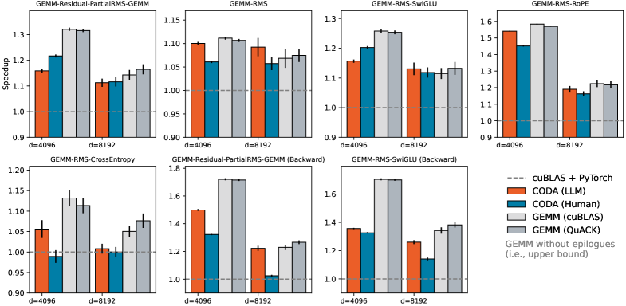
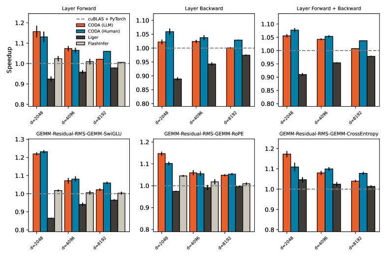
| 深度 | 操作链 | eager 版 kernel 数 |
|---|---|---|
| L0 | x @ w | 1 |
| L1 | x @ w + residual | 2 |
| L2 | L1 → RMSNorm γ 缩放 | ~5-6 |
| L3 | L2 + SwiGLU | ~8-10 |
| L4 | L3 + RoPE | ~10-12 |
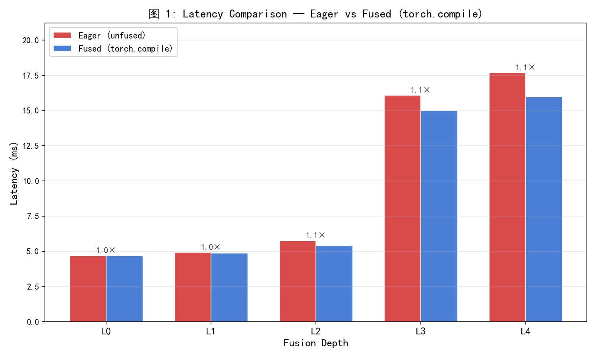
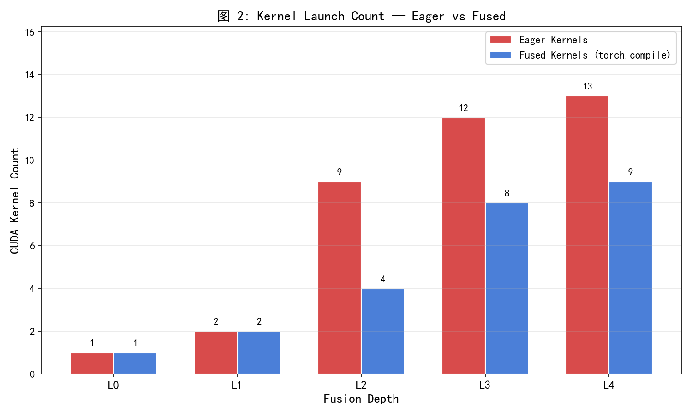
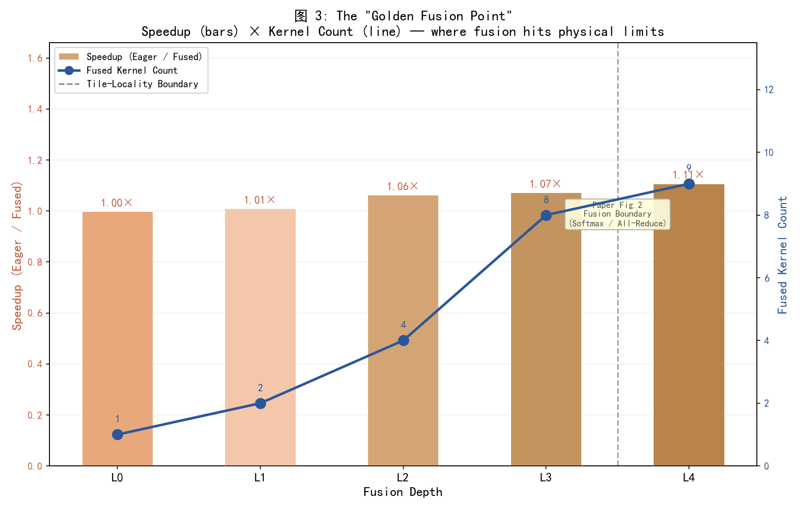
Transformer 中除 Attention 外的几乎所有操作可统一为该结构，一套框架覆盖前向+反向。
只要前向 tile-local，反向自动 tile-local——反向开发从"设计新 kernel"降维为"填空 VJP"。
固化 GEMM + 开放尾部 + AI 填原语——从"手艺人精雕细琢"走向"编译器全自动生成"。